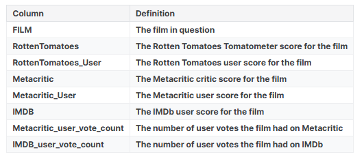
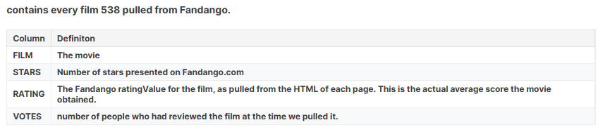
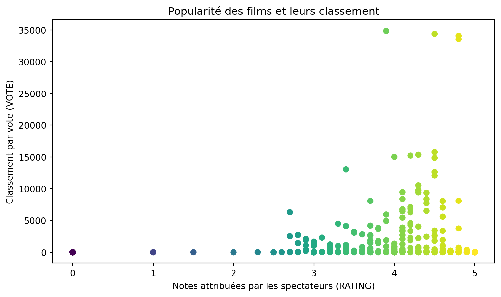

import warnings
import pandas as pd
import numpy as np
import matplotlib.pyplot as plt
import seaborn as sns Projet de Data Science
Présentation
Vous envisagez de sortir voir un film. pour ce faire vous decidez de faire confiance aux critiques et évaluation en ligne. Cependant vous êtes convaincu l’entreprise qui affichie les notes gagne de l’argent en vandant les billets. Aussi une question vous vient à l’esprit : Est-ce que l’entreprise à tendance à sur-évaluer les films avec de meilleurs notes que celle qu’ils devraient obtenir ?
Objectif
Utilisez les compétences en pandas et data viz pour déterminer si les notes de Fandango en 2015 etaient orientées vers une meilleures évaluationnotation des films dans le but de vendre plus de billet.
Methodologie
Comparer les note des Fandango avec celles de l’article du site 538 Clique ici
Presentation des données
Data 1 : all_sites_scores.csv
ce dataset contient tous les films qui ont une note Rotten Tomatoes, une note RT User, une note Metacritic, une note note Metacritic User, une note IMDb, et au moins 30 critiques de fans sur Fandango. Les données ont été extraites de 24 août 2015

Data 2 : fandango_scrape.csv
contient tous les films de l’article 538 tirés de Fandango

Importation des bibliothèques
Importation du premier dataset
- Importoation du dataset fandango_scrape.csv
fandango = pd.read_csv("fandango_scrape.csv")- Exploration des proprités du datasets et head
fandango.head()| FILM | STARS | RATING | VOTES | |
|---|---|---|---|---|
| 0 | Fifty Shades of Grey (2015) | 4.0 | 3.9 | 34846 |
| 1 | Jurassic World (2015) | 4.5 | 4.5 | 34390 |
| 2 | American Sniper (2015) | 5.0 | 4.8 | 34085 |
| 3 | Furious 7 (2015) | 5.0 | 4.8 | 33538 |
| 4 | Inside Out (2015) | 4.5 | 4.5 | 15749 |
fandango.info()<class 'pandas.core.frame.DataFrame'>
RangeIndex: 504 entries, 0 to 503
Data columns (total 4 columns):
# Column Non-Null Count Dtype
--- ------ -------------- -----
0 FILM 504 non-null object
1 STARS 504 non-null float64
2 RATING 504 non-null float64
3 VOTES 504 non-null int64
dtypes: float64(2), int64(1), object(1)
memory usage: 15.9+ KBfandango.describe().transpose()| count | mean | std | min | 25% | 50% | 75% | max | |
|---|---|---|---|---|---|---|---|---|
| STARS | 504.0 | 3.558532 | 1.563133 | 0.0 | 3.5 | 4.0 | 4.50 | 5.0 |
| RATING | 504.0 | 3.375794 | 1.491223 | 0.0 | 3.1 | 3.8 | 4.30 | 5.0 |
| VOTES | 504.0 | 1147.863095 | 3830.583136 | 0.0 | 3.0 | 18.5 | 189.75 | 34846.0 |
- Explorons la popularité d’un film et son classement
plt.figure(figsize =(4,2),dpi=150)
sns.scatterplot(data = fandango,x = 'RATING', y = 'VOTES')
plt.show();
- Explorons la corrélation entre les variables
fandango[['STARS','RATING', 'VOTES']].corr()| STARS | RATING | VOTES | |
|---|---|---|---|
| STARS | 1.000000 | 0.994696 | 0.164218 |
| RATING | 0.994696 | 1.000000 | 0.163764 |
| VOTES | 0.164218 | 0.163764 | 1.000000 |
hypotheses : les variables STARS et RATING ne sont pas parfaitement corrélées. Il semble y avoir un ecart entre les scores attribués aux films et les étoiles
- Création d’une nouvele colonnes contenant la date de sortie des films
title = 'Nom du titre du film (Annee)'title.split('(')[-1].replace(')', '')'Annee'fandango['YEAR'] = fandango['FILM'].apply(lambda title: title.split('(')[-1].replace(')', '') )fandango| FILM | STARS | RATING | VOTES | YEAR | |
|---|---|---|---|---|---|
| 0 | Fifty Shades of Grey (2015) | 4.0 | 3.9 | 34846 | 2015 |
| 1 | Jurassic World (2015) | 4.5 | 4.5 | 34390 | 2015 |
| 2 | American Sniper (2015) | 5.0 | 4.8 | 34085 | 2015 |
| 3 | Furious 7 (2015) | 5.0 | 4.8 | 33538 | 2015 |
| 4 | Inside Out (2015) | 4.5 | 4.5 | 15749 | 2015 |
| ... | ... | ... | ... | ... | ... |
| 499 | Valiyavan (2015) | 0.0 | 0.0 | 0 | 2015 |
| 500 | WWE SummerSlam 2015 (2015) | 0.0 | 0.0 | 0 | 2015 |
| 501 | Yagavarayinum Naa Kaakka (2015) | 0.0 | 0.0 | 0 | 2015 |
| 502 | Yesterday, Today and Tomorrow (1964) | 0.0 | 0.0 | 0 | 1964 |
| 503 | Zarafa (2012) | 0.0 | 0.0 | 0 | 2012 |
504 rows × 5 columns
- Explorons le nombre de film par Année
fandango['YEAR'].value_counts()YEAR
2015 478
2014 23
2016 1
1964 1
2012 1
Name: count, dtype: int64- Explorons le top 10 des films avec le plus grand nombre de votes
fandango.nlargest(10, 'VOTES')| FILM | STARS | RATING | VOTES | YEAR | |
|---|---|---|---|---|---|
| 0 | Fifty Shades of Grey (2015) | 4.0 | 3.9 | 34846 | 2015 |
| 1 | Jurassic World (2015) | 4.5 | 4.5 | 34390 | 2015 |
| 2 | American Sniper (2015) | 5.0 | 4.8 | 34085 | 2015 |
| 3 | Furious 7 (2015) | 5.0 | 4.8 | 33538 | 2015 |
| 4 | Inside Out (2015) | 4.5 | 4.5 | 15749 | 2015 |
| 5 | The Hobbit: The Battle of the Five Armies (2014) | 4.5 | 4.3 | 15337 | 2014 |
| 6 | Kingsman: The Secret Service (2015) | 4.5 | 4.2 | 15205 | 2015 |
| 7 | Minions (2015) | 4.0 | 4.0 | 14998 | 2015 |
| 8 | Avengers: Age of Ultron (2015) | 5.0 | 4.5 | 14846 | 2015 |
| 9 | Into the Woods (2014) | 3.5 | 3.4 | 13055 | 2014 |
- Explorons le nombre de films avec 0/aucun votes
fandango[fandango['VOTES'] == 0]| FILM | STARS | RATING | VOTES | YEAR | |
|---|---|---|---|---|---|
| 435 | 6 Years (2015) | 0.0 | 0.0 | 0 | 2015 |
| 436 | 7 Minutes (2015) | 0.0 | 0.0 | 0 | 2015 |
| 437 | A Year in Champagne (2015) | 0.0 | 0.0 | 0 | 2015 |
| 438 | Balls Out (2015) | 0.0 | 0.0 | 0 | 2015 |
| 439 | Before I Wake (2015) | 0.0 | 0.0 | 0 | 2015 |
| ... | ... | ... | ... | ... | ... |
| 499 | Valiyavan (2015) | 0.0 | 0.0 | 0 | 2015 |
| 500 | WWE SummerSlam 2015 (2015) | 0.0 | 0.0 | 0 | 2015 |
| 501 | Yagavarayinum Naa Kaakka (2015) | 0.0 | 0.0 | 0 | 2015 |
| 502 | Yesterday, Today and Tomorrow (1964) | 0.0 | 0.0 | 0 | 1964 |
| 503 | Zarafa (2012) | 0.0 | 0.0 | 0 | 2012 |
69 rows × 5 columns
- Extraction des films qui ont connu au moins un vote
df_fandango = fandango[(fandango['VOTES'] > 0)]